Blue Ridge Parkway · MP 239Fri Oct 2 – Sat Oct 3Site B52 · Loop BSunrise 7:20 AMMartin + Eli
Sunrise on the Bluffs
One night camping at Doughton Park, way up on the Blue Ridge Parkway, with big grassy meadows, deer and long views. Campfire and s'mores Friday, then an early headlamp hike to catch the sunrise before the rain shows up.
The plan, fast: Martin picks you up in Winston-Salem around 12:30 PM Friday. About 2 hours to camp, plus a lunch stop while Grivvy charges. We get to camp around 3:40, with plenty of daylight to set up. You get your own tent. Saturday: up at 6:00, sunrise hike 6:30 to 8:30, pack up, and you're home around noon to 12:30.
The mission
Set up camp, build a fire, sleep on the mountain, and be on the trail with headlamps before the sun comes up.
NC-89 climbs up to the Blue Ridge Parkway, then about 22 miles south on the Parkway. Camp is about 2,500 ft higher than Mount Airy, so your ears might pop.
Going home Saturday: straight from camp to Winston-Salem, about 1¾ hours, down the mountain on US-21. Cell service at camp is weak, so download music and shows before you leave.
Charging Grivvy (the simple version)
Grivvy is Martin's electric Rivian truck. Climbing up to the Parkway uses a lot of battery, so we fill up at a fast charger at the Flying J truck stop in Mount Airy, the last good charger before the mountains. It takes about 25–35 minutes, which is exactly lunch: food, bathroom, snacks, ice for the cooler. Martin handles the rest. There's no charging stop on your ride home.
The camp setup
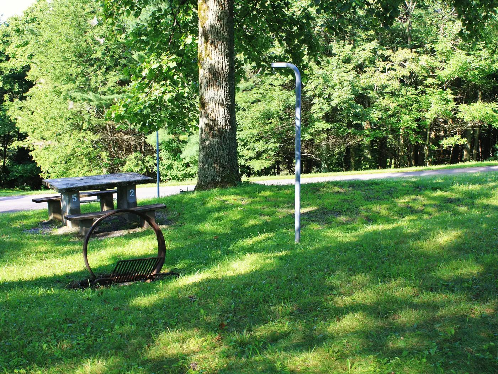
Site B52: picnic table, lantern post and fire ring with a grill, under big shady trees.
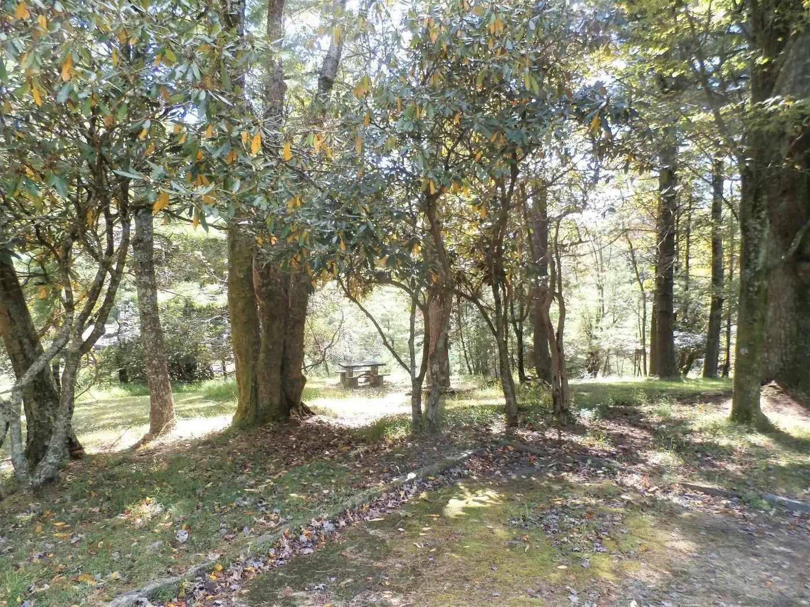
Loop B is the tent loop: wooded and quiet.
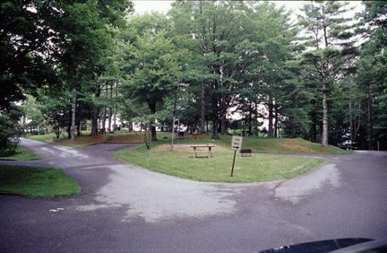
Campground roads: paved loops, grass, trees.
Your spot
Eli's own tent
You get your own tent set up right next to the truck, with:
Your own air mattress (tested for leaks the night before)
Sleeping bag and pillow
Electric blanket powered by the truck
Martin's spot
Truck-bed tent
Martin sleeps in Grivvy's bed on an air mattress under a truck-bed tent, a few feet from you.
Friday night should be mild, around 61°, so it won't be a freezing night. Still bring a hoodie: it's breezy up on the ridge.
Bears live here. Normal, just be smart. All food, drinks, the cooler, trash, and anything that smells (toothpaste, snacks) go in the locked truck at night and whenever we leave camp. Never keep food in your tent.
Where are the bathrooms?
Short answer: about a 1-minute walk
B52 is on the inside of Loop B, and there's a restroom building in the middle of that same inner loop, roughly 120–150 ft from our site, with a water faucet right next to us. It has flush toilets and sinks. There are no showers anywhere in the campground, so it's a no-shower trip.
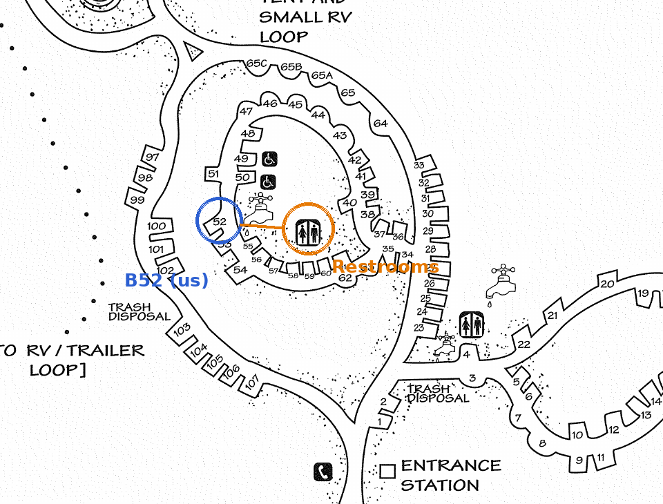
Part of the official NPS Doughton Park Campground map, marked up for us. Distance is an estimate. Another restroom sits by sites 4 and 23, near the entrance.
Take your headlamp at night. There are no streetlights on the loop.
Hikes
6:30–8:30
sunrise hike window
~3–4 mi
round trip, our pace
7:20 AM
sunrise
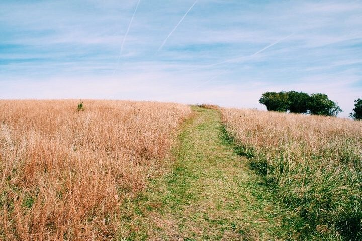
★ Our sunrise hike
Bluff Mountain Trail, right from camp
NPS: 7.5 mi one way from Brinegar Cabin to Basin Cove Overlook, mostly level. We do a piece of it: out from camp until 7:30, then back. That's about 1½–2 mi each way.
The trail runs right past the campground. We head toward the open meadows of the Bluffs, starting in the dark with headlamps. The sky gets light around 6:56 and the sun comes up at 7:20. It's mostly gentle, grassy and wooded, and you might see deer in the fields.
This piece of trail is part of the AllTrails route below, which starts at Brinegar Cabin, goes past the campground, and runs out to Fodder Stack.
NPS: 2 mi round trip, easy to moderate, short steep section at the start. AllTrails: 1.2 mi, ~350 ft gain.
Starts at the old Bluffs Lodge parking lot (a short drive from camp) and drops through pine and hardwood forest to a little knob called Fodder Stack. Some hikers say it's overgrown with few views.
AllTrails: 0.2 mi out-and-back, ~22 ft gain, easy.
A short paved path from the same parking lot to a platform looking straight down into Basin Cove. Best view for the least effort, and a good backup if the rain comes early.
About 1 mi north of camp on the Bluff Mountain Trail (Parkway MP 238.5). Cabin built in 1889.
An old mountain family's log cabin, springhouse and garden. The Bluff Mountain Trail officially starts here. It's the short northern option if we want an easy walk.
Low ~61° · Clouds move in, mild. Small chance of showers late (after 2 AM).
Sat Oct 3
High ~62° · Rain likely, mostly from about 8 AM on. ~25% before 8, 55–70% after
What this means for us: Friday is perfect. Saturday, the rain probably holds off until around 8, so the hike goes early, and we pack the tents right after, even if they're wet. Wet tents go in a dry bag or trash bags and get dried at home. Keep your rain jacket in the cab, not packed away. Check the live forecast the night before.
More photos
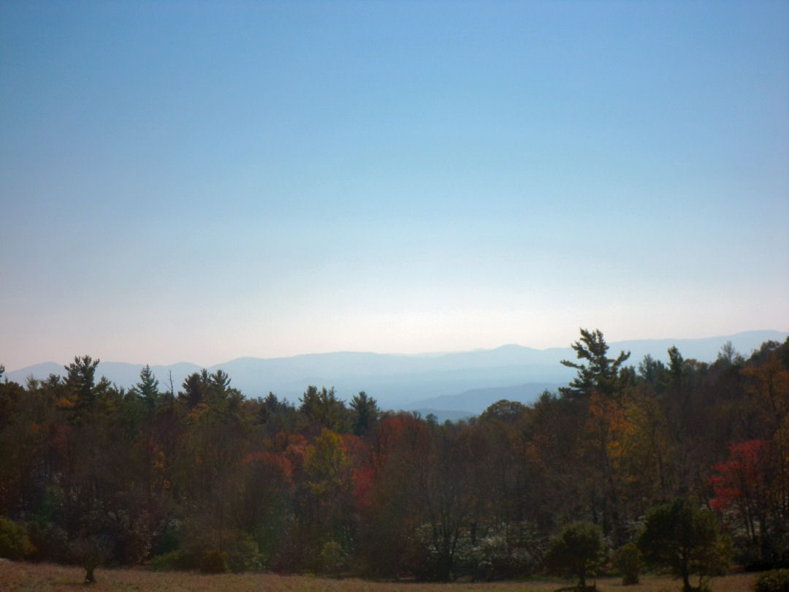
The view from the Parkway in Doughton Park.
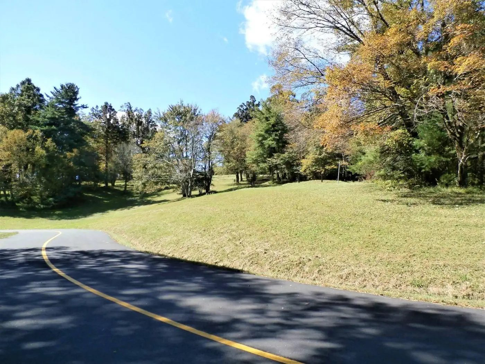
The road in: fields along the Parkway near camp.
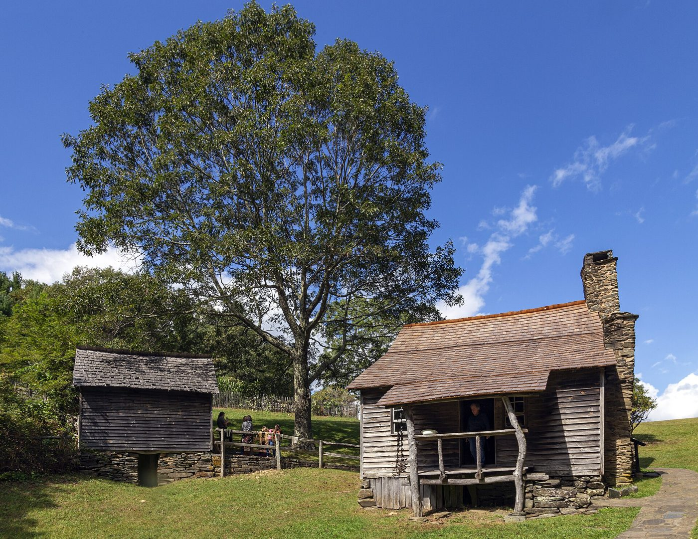
Brinegar Cabin (1889), a mile up the trail.
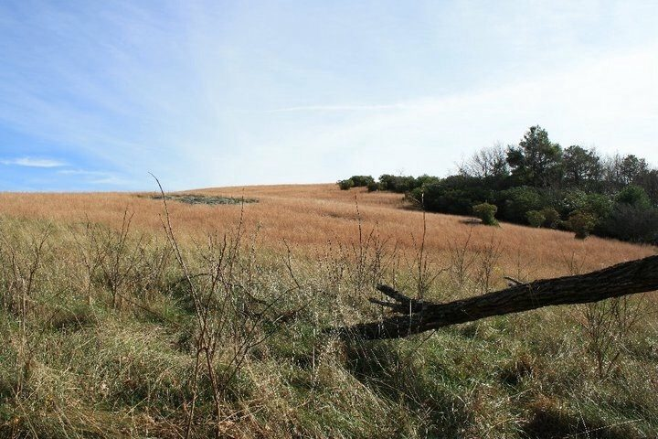
Meadow trail in Doughton Park.
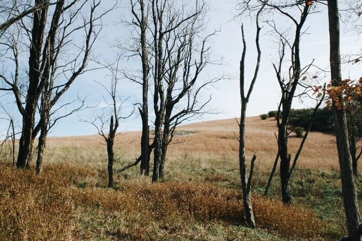
Up on the Bluffs.
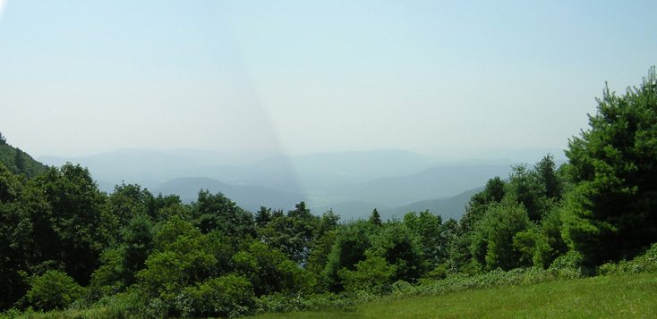
Blue ridges from the Brinegar Cabin lot.
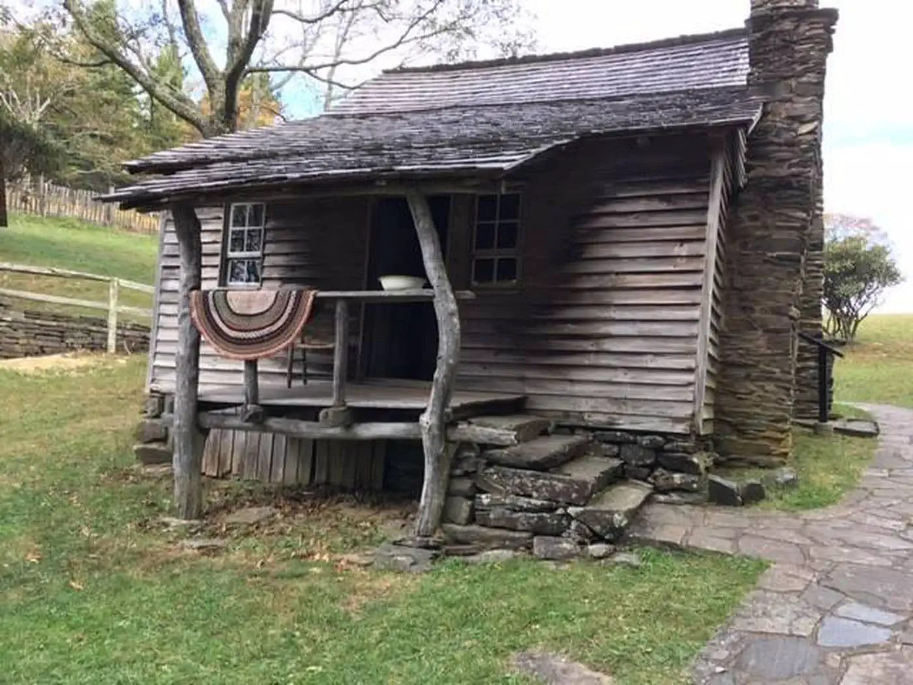
Brinegar Cabin porch.
What to bring
The full checklist lives here. You can tap items to check them off on your phone: